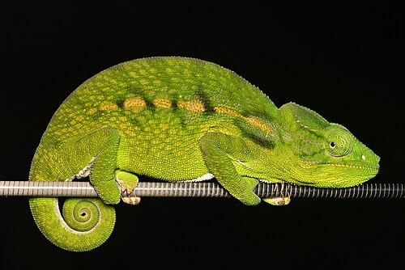
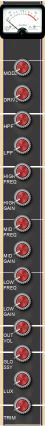

CHAMELEONCONSOLEEin Kanalzug-Plugin mit 17 Konsolen-Ären — DSP in FreePascal, CLAP + VST3
Neve 1073 bis MCI JH — echte Ballistik, kalibriertes VU, Sprite-Knöpfe.
ChameleonConsole ist ein Mono-Kanalzug-Plugin, das Ton und Feel von 17 klassischen Konsolen-Ären emuliert. Die DSP ist in FreePascal (ZDF-EQ/HPF/LPF, 2× Oversampling, Transformer- & Tape-Emulation). Format/GUI als CLAP (VST3 via clap-wrapper).

| Format | Platform |
|---|---|
| CLAP | Win / Linux / macOS |
| VST3 | Win / Linux / macOS |
| AUv2 | macOS (optional) |
Neve 1073 … MCI JH.
ZDF EQ/HPF/LPF.
Attack/release + vu.ini.
Sprite knobs + VU.
15 params.
knobs.ini.